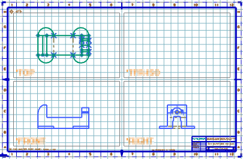
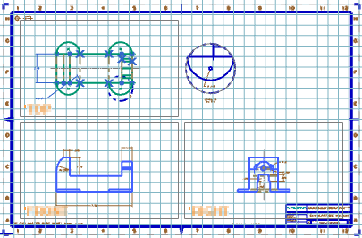

NX 中的2D 制图过程
预计完成这堂课需要：25–37 分钟
NX 提供对基本2D 制图工作流的支持：
-
非基于视图的方法 — 将2D 几何体直接应用到图纸页
-
基于图纸视图的方法 — 使用图纸视图管理2D 曲线和生成的3D 建模草图
设置制图标准和图纸首选项
在您创建图纸前，建议先设置新图纸的制图标准、制图视图首选项和注释首选项。设置之后，所有视图和注释都将以适当的可视特性和符号一致创建。
新建独立的 2D 图纸
创建独立 2D 图纸的第一步为新建部件文件。此图纸部件文件不需要引用 3D 模型几何体。您可以使用不需要引用模型几何体的图纸模板。

添加视图
使用基于图纸视图的方法时，可以同时创建一个空的图纸视图或多个空的图纸视图。图纸视图决定所有投影视图的正交空间和视图对齐，并且可以用于创建局部放大图。

创建曲线和草图
在 NX 中，您可以在图纸页或制图视图上直接创建草图曲线。您还可以在展开模式的视图中直接创建基本曲线。
在基于图纸视图的方法中，投影到视图命令通过将曲线经适当方位从一个视图投影到其他视图，简化了 2D 设计。

在非基于视图的方法中，NX 提供使用无限长直线的功能，帮助您在图纸中创建并对齐 2D 几何体。
添加注释
将视图放在图纸上之后，您可以添加注释。
尺寸标注、符号等注释与视图中的几何体相关联。移动视图时，相关联的注释也将一起移动。如果对模型进行了编辑，则尺寸和符号会更新以反映所作的更改。

您还可以将注释、标签和零件明细表添加到图纸中。
对于已完成的图纸，可以利用 NX 直接进行绘图，或者制造部门可以直接使用包含图纸的部件进行部件装配。
将2D 设计转换为3D 模型
在基于图纸视图的方法中，NX 提供将2D 设计转换为3D 模型的简化路径，而不重新创建整个几何体。使用复制到3D 命令将草图和视图曲线从制图视图投影到 3D 模型空间，作为模型几何体构建的起点。